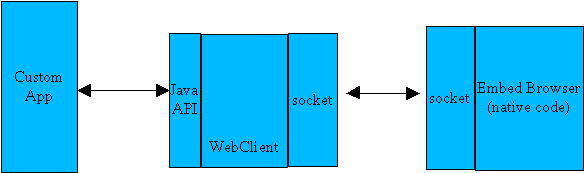
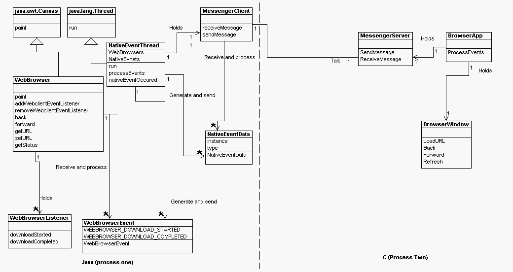
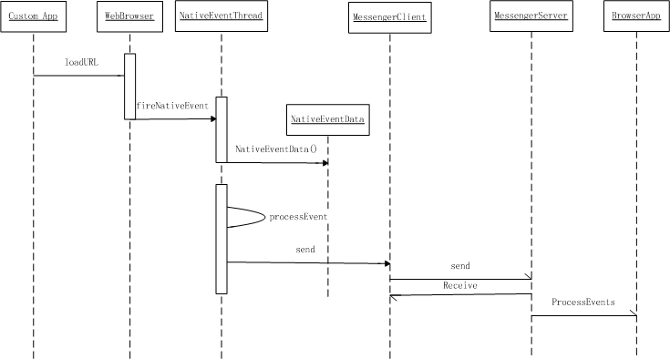
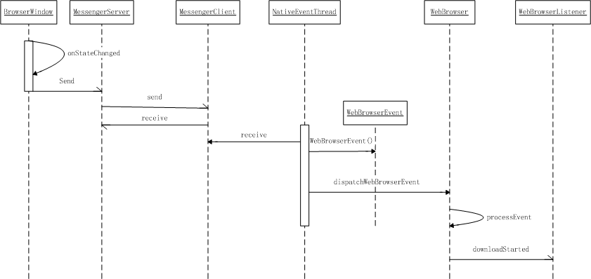

Package org.jdesktop.jdic.browser (Browser component) Specification |
This section gives a high level overview of the system, performance and functional requirements for the Browser component.
As HTML is a very popular format of file, the requirement to display HTML or XML file inside Java GUI application is increasing. Unfortunately, so far, in terms of capability, the existing Java API doesn't compete with what modern browsers offer. The goal of Browser component is to provide a simple AWT component which enables Java applications and applets to access basic featured web browsing capability. These basic functionalities include creating browser window, web content rendering, navigation, a basic history mechanism (back & forward), and progress notification.
The component performance should not slow down the Java application. For instance, while the component is invoked by loading, reloading or dispatching events, the Java program don't have to wait if it takes long time in practice.
This section provides detailed, adequate information about the design of the Browser component. It covers not only the system architecture and UML analyze, but also design considerations and decisions.
Describe any assumptions or dependencies regarding the software and its use. These may concern such issues as:
The end-user is defined as Java developer who is in need of a basic featured browser component in their Java application.
Simple and only necessary browser functionalities support
Widely content rendering capability
Brower neutral
Working, looking, or "feeling" like an existing Java APIs
Acceptable performance
In order to support Java applets, we implement Browser component using an out-process approach. In other words, the native browser implemented in C++ actually runs as a standalone process, outside the Java VM process which Browser component is running in. Socket is used for communication between these two processes.
We provide Java APIs for developer to access browser capability, but actually the Java code does not implement any function of browser. Instead, we embed a real stand alone web browser, like Mozilla or IE, which serves as a standalone application. The custom app doesn't know which browser is embed, it can only see the Browser component. The Browser component is responsible for calling the native implementation code and communicate with native embed browser.
The Java browser component is inherited from java.awt.Canvas. The AWT Native Interface enables rendering libraries compiled to native code to draw directly to a Java Canvas drawing surface. This means that such libraries can be used without being converted to Java first and without significant impact on performance. The Java browser component extends from Canvas and overwrites the paint method.

This section covers the interface and implementation object hierarchies.
From the custom app developer's perspective, there are two parts to the system: the WebBrowser APIs and the event system. The programmatic interface to WebBrowser is a Java class that is implemented by WebBrowser and callable from the custom app. See also the EventListener interface, which are implemented by the custom app and are called by WebBrowser.
a) WebBrowser class
This class derives from java.awt.Canvas and overrides the Canvas.paint() method so that the native browser can render its content over the canvas. Applications hosting this class will support browsing sites on the World Wide Web, as well as directories/files on the local computer and on network servers.
class WebBrowser extends java.awt.Canvas
voidaddNotify()
Creates the peer of the WebBrowser.
voidaddWebBrowserEventListener(WebBrowserListener listener)
Adds an event listener for WebBrowser events.
voidback()
Navigate to the previous session history item.
voidforward()
Navigate to the next session history item.
WebBrowser.StatusgetStatus()
Return a Status object.
java.net.URLgetURL()
Retrieves the URL of the resource that is currently displaying.
voidpaint(java.awt.Graphics g)
voidrefresh()
Reloads the file that is currently displayed in the object.
voidremoveWebBrowserEventListener(WebBrowserListener listener)
Removes an event listener for WebBrowser events.
voidsetBounds(int x, int y, int w, int h)Moves and resizes this component.
voidsetURL(java.net.URL url)
Navigates to a resource identified by a URL or to the file identified by a full path.
voidstop()
Stops loading of current URL.
b) WebBrowserListener interface
For the more than minimal browser, it is necessary to get event notifications from the native browser. Hence, WebBrowser will surface event listener APIs. The custom app developer would implement these APIs in the app, and register their implementations with WebBrowser so that the appropriate callback methods in the custom app would be invoked.
interface WebBrowserListener extends java.util.EventListener void downloadStarted( WebBrowserEvent event)Fires when a download operation is beginning. void downloadCompleted( WebBrowserEvent event)Fires when a download operation finishes, is halted, or fails. void downloadProgress( WebBrowserEvent event)Fires when the progress of a download operation is updated. void downloadError( WebBrowserEvent event)Fires when an error occurs during download.
c) WebBrowserEvent class
The WebBrowerEvent is a subclass of java.awt.AWTEvent. It defines the ID representing specified WebBrowser event and provide constructor function.
class WebBrowserEvent extends java.util.EventObject WebBrowserEvent (WebBrowser source)Constructor. int getID() Gets the event ID. String getData() Gets the event data, if any.
d) WebBrowserStatus class
This is an inner class which is used for retrieving the WebBrowser's property, such as initialization status, command status.
class Status booleanisInitialized() Indicates whether the WebBrowser object is successfully initialized. booleanisBackEnabled() Indicates whether the back() method is enabled. booleanisForwardEnabled() Indicates whether the forward() method is enabled.
NativeEventThread is a java.lang.Thread subclass. It is created when the first WebBrowser created. When run, this thread goes into an infinite loop that executes the native event loop once and process the events came from custom app. There is only one instance of NativeEventThread for all WebBrowser.
NativeEventThread has three purposes:
- to give the browser a chance to process its own native events (mouse, keypress, paint, etc.)
- to process events from the java to the browser.
- to process events from the browser to java.
NativeEventData is the event object which transfers the call from custom app to NativeEventThread. It has two important attributes: instance and type. The instance attribute indicates to which WebBrowser the event is related; the type attribute indicate ID of the event type. NativeEventData holds a vector of NativeEventData named nativeEvents. When WebBrowser gets a method call from custom app, a corresponding NativeEventData will be created and added to nativeEvents. NativeEventThread process the events from nativeEvents continuously.
The details of sending an event from java to the browser are as follows.
When the custom app calls WebBrowser method, say setURL, WebBrowser makes a new NativeEventData, which includes the detail event type & data, and add it to the NativeEventThread's private event queue - nativeEvents. NativeEventThread peeks the event from nativeEvents in run(), and send the message to native browser through two instance which communicate through socket: MsgServer and MsgClient.
The details of sending an event from the browser to java are as follows.
When a browser event occurrs, it sends out the event through socket, NativeEventThread get this event through MsgClient and then process this event. Due to the thread-safety reason, it invokes the dispatchWebBrowserEvent method of WebBrowser . WebBrowser.dispatchWebBrowserEvent analyzes the WebBrowseEvent and passes them to the registered WebBrowserListerner.



Browser component learns some ideas from Webclient. But unlike Webclient, Browser component targets to provide the full capability to build up a Java GUI's embedded browser, it's more likely a HTML/XML viewer that can be embedded into any Java application as an AWT component.